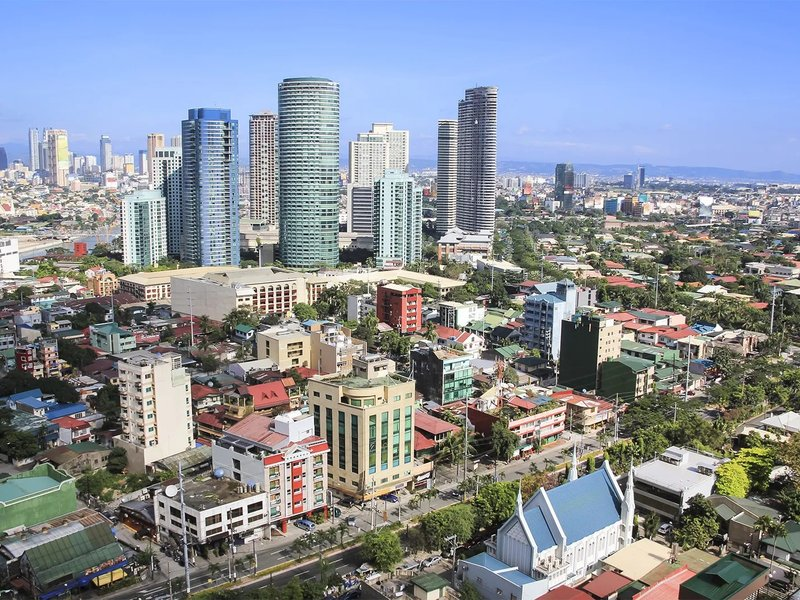
01
MANILA
PHILIPPINESIntramuros, Fort Santiago, Rizal Park, and the bay — layers of colonial and contemporary life.
EXPLORE MANILAA visual journey through the streets, heritage, landscapes, and everyday stories of Manila, Iloilo, and Tokyo.
EXPLORE THE JOURNEY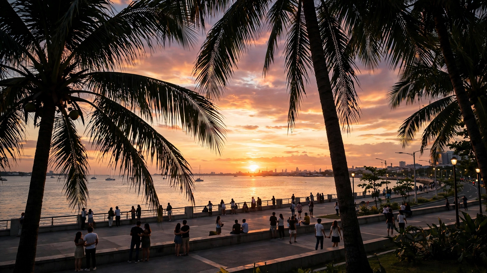
Three cities. Two countries. Different histories, cultures, and rhythms.
This visual journal explores Manila, Iloilo, and Tokyo through places, people, architecture, food, and everyday life. Each destination tells its own story — from colonial walls to riverside heritage, from neon-lit crossings to ancient temples.

Intramuros, Fort Santiago, Rizal Park, and the bay — layers of colonial and contemporary life.
EXPLORE MANILA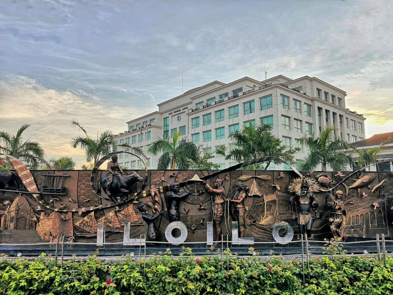
Heritage mansions, river esplanade, La Paz Batchoy, and the Dinagyang spirit.
EXPLORE ILOILO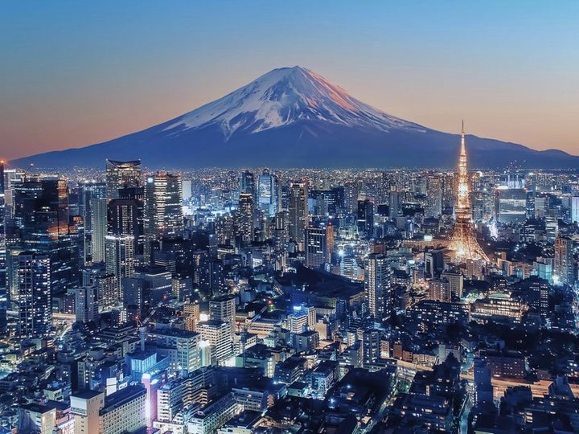
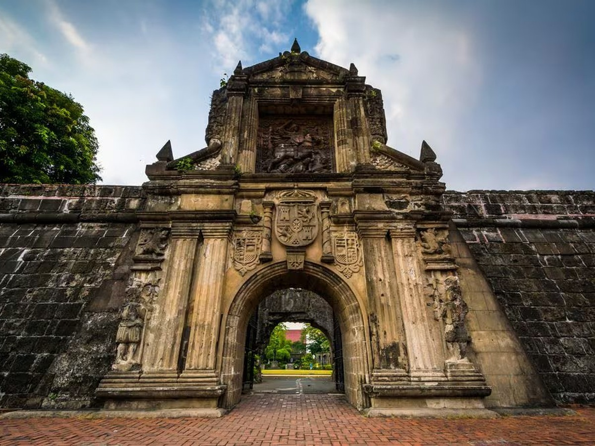
Historical context: Fort Santiago is a 16th-century citadel built by the Spanish. It served as a defensive fortress and later as a prison. It is closely linked to the Philippine national hero José Rizal, who was detained here before his execution.
What to notice: The stone walls, the Rizal Shrine, and the intricate gates that echo colonial military architecture.
Why visit: It offers a tangible connection to the Philippines' colonial past and the story of its independence.
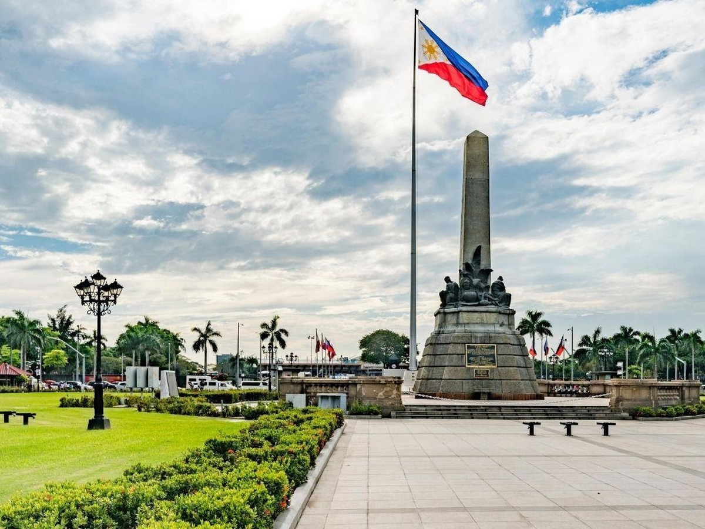
Historical context: Also known as Luneta, this park is a major historical landmark where José Rizal was executed in 1896. It marks the end of Spanish colonial rule.
What to notice: The Rizal Monument, the flagpole, and the surrounding gardens that serve as a public gathering space.
Why visit: It is the heart of Manila's civic life and a symbol of Filipino identity.
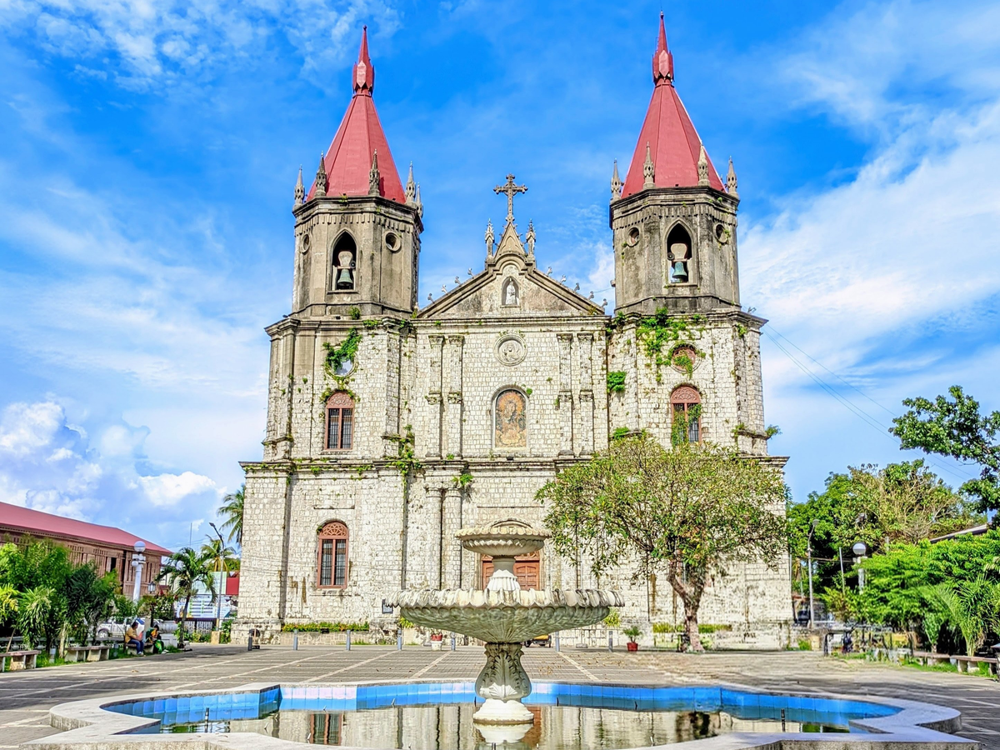
Historical context: Built in the 19th century, Molo Church is a neo-Gothic structure that stands out for its all-female saints, earning it the nickname "feminist church." It reflects the strong Ilonggo heritage.
What to notice: The coral stone facade, the intricate altars, and the stained glass windows.
Why visit: It is a unique example of local religious architecture and devotion.
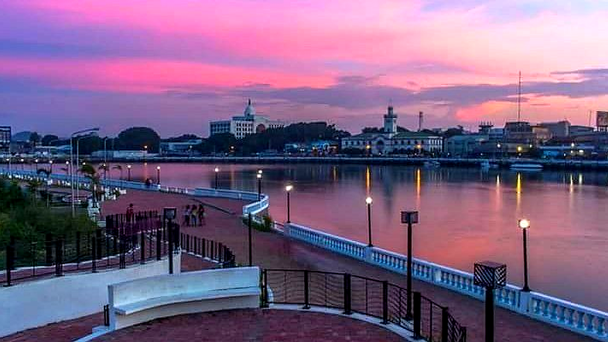
Historical context: The esplanade is part of Iloilo's urban renewal, transforming the riverfront into a public space that celebrates the city's heritage and modern development.
What to notice: The walkways, local sculptures, and the view of the river that has been central to Ilonggo life.
Why visit: It's a peaceful place to experience the city's contemporary identity and community life.
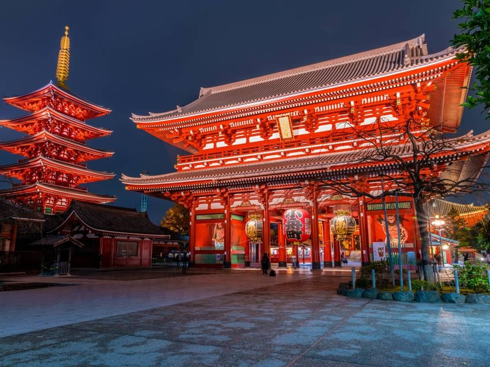
Historical context: Founded in 645 AD, Senso-ji is Tokyo's oldest temple. It is dedicated to Kannon, the goddess of mercy, and has survived fires, wars, and reconstruction.
What to notice: The Thunder Gate (Kaminarimon), the main hall, and the five-story pagoda.
Why visit: It embodies the spiritual heart of Tokyo amidst the modern city.
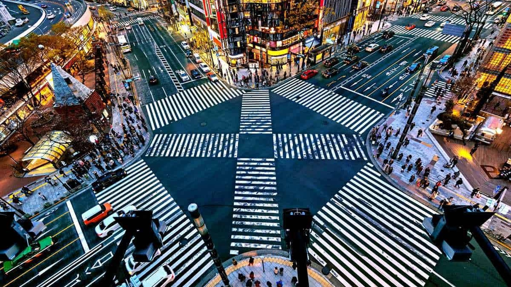
Historical context: Shibuya has evolved from a local railway hub to a global symbol of Tokyo's energy. The crossing represents the city's dense, organized chaos.
What to notice: The synchronized pedestrian flow, neon signage, and the surrounding department stores.
Why visit: It captures the pulse of contemporary Tokyo.
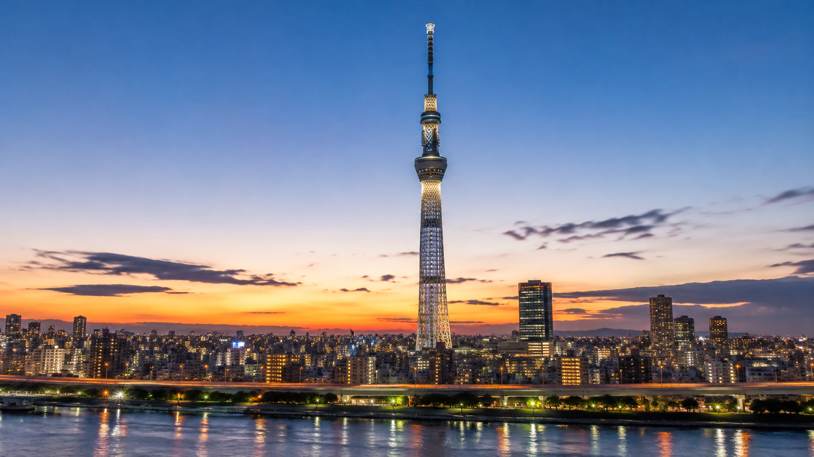
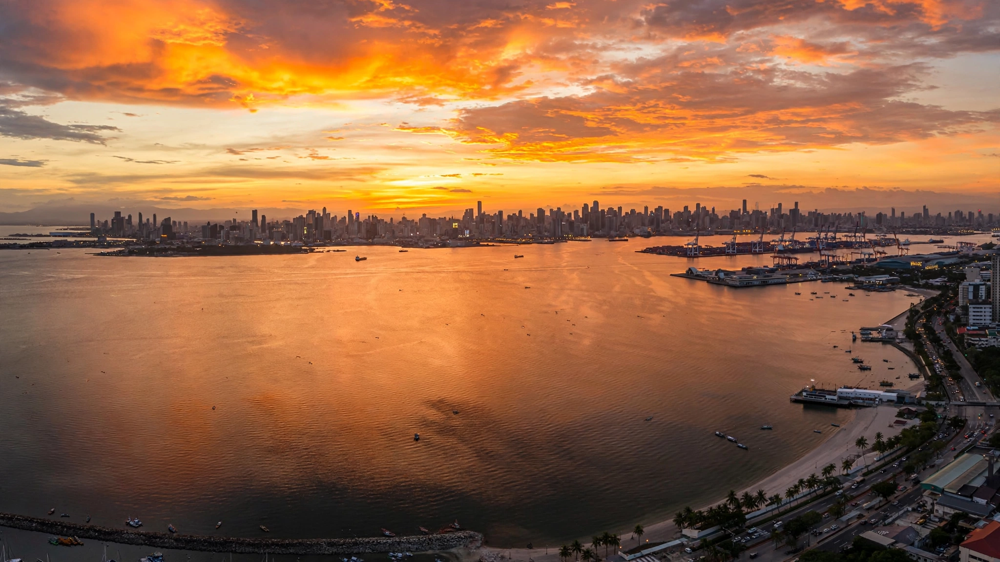
My World Explorer is a visual travel journal exploring three destinations across the Philippines and Japan. Manila was chosen for its layered history and urban energy; Iloilo for its heritage and warm culture; Tokyo for its dynamic contrast between tradition and modernity. Each city offers a unique lens on architecture, food, and everyday life.
This project celebrates the diversity of cities — from colonial walls to riverside promenades, from temple gates to neon crossings. It is a journey through real places, real stories, and real cultures.